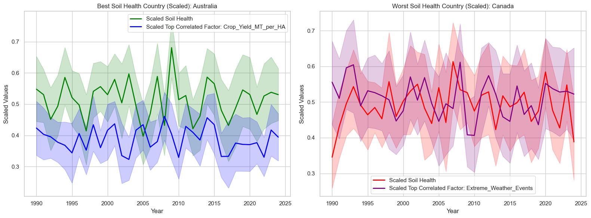
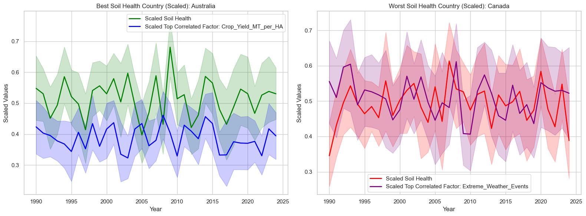
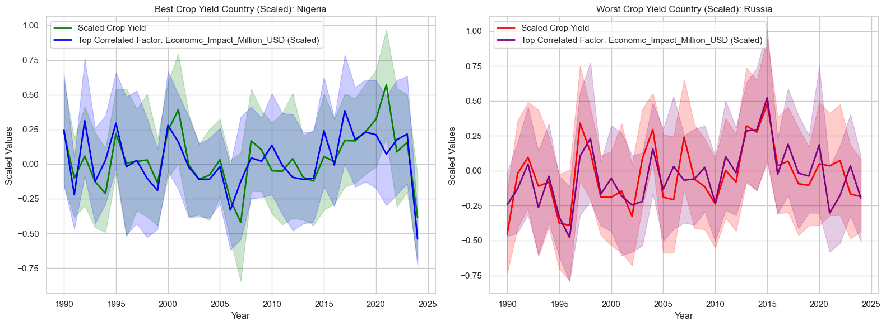
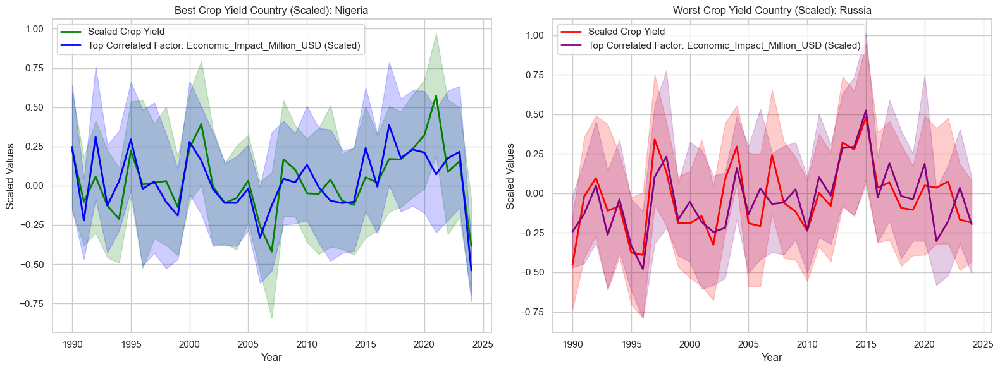

Background
As global temperatures rise and precipitation patterns change, agricultural practices are forced to adapt. Understanding how climate and adaptation strategies impact crop yields and economic outcomes is crucial for mitigating the effects of climate change on food production. By analyzing how different regions are responding to climate variability, we can identify successful strategies that could be applied globally to ensure food security.
The data source
This dataset includes agricultural data from 1990 to 2024, covering a wide range of crops, countries, and regions. It tracks factors like temperature, precipitation, CO2 emissions, crop yields, and economic impacts. Size of Data: The dataset contains 10,000 records across 10 countries, with 10 attributes per entry, including crop types, climate data, and adaptation strategies.
Attributes
- Year (1990 - 2024)
- Country
- Crop Type (barley, coffee, corn, cotton, fruits, rice, soybeans, sugarcane, vegetables, wheat)
- Average Temperature (°C)
- Total Precipitation (mm)
- CO2 Emissions (metric tons)
- Crop Yield (metric tons per hectare)
- Extreme Weather Events (0 - 10)
- Irrigation Access (0 - 100)
- Pesticide Use (kilogram per hectare)
- Fertilizer Use (kilogram per hectare)
- Soil Health Index (0 - 100)
- Adaption Strategies (crop rotation, drought-resistant crops, organic farming, water management, no adaptation)
- Economic Impact (in million USD)

.png)
.png)


.png)
.png)
.png)


.png)
.png) 

 



.png)